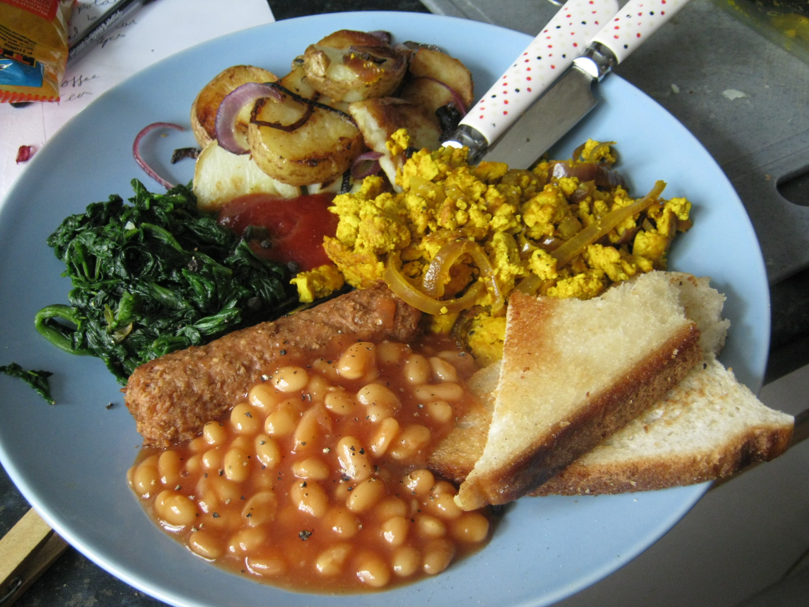

Fried goods are the best goods!

There's nothing like starting the day right and what feels more right
than a good old fashioned fry up! Nothing, obviously.
Now, we're vegan here so no egg, if you want a good replacement for
them scrambled tofu is great but thats a whole other recipe which
we will not be covering here (duckduckgo it or something!?) Anyway
ingredients! Here we go!
- Hash browns
- Baked beans
- A couple of slices of toast
- Sausages
- Mushrooms
- Something green like kale
- Garlic
- Spread
- Salt & pepper
Now put it all together like this;
- Preheat the oven.
- Pop the hash browns in the oven.
- Cut up the garlic, kale and mushrooms.
- Maybe put the sausages in the oven now, idk what sausages you
picked, check the packet.
- Put the beans on the hob at a low heat, add appropriate amount
of hot sauce.
- Flip the hash browns and check on the saus.
- Fry the mushrooms and garlic.
- If I hadn't made it clear already you should probably be
adding salt and pepper to everything.
- Put bread in the toaster and boil kale.
- Add spread to toast, drain kale and put it all on the plate.
- Add a little more salt, maybe a small amount of hot sauce.
You've officially had the best possible breakfast now go out there
and kick some butt!
Home(page) sweet home(page)